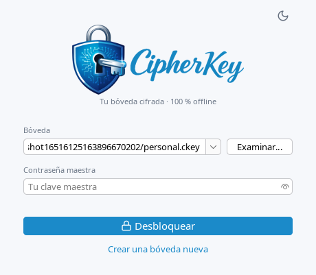
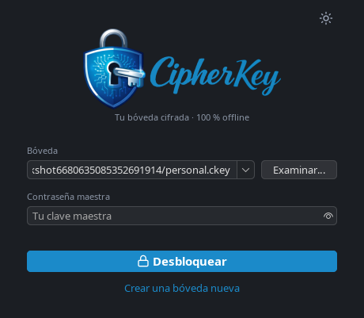
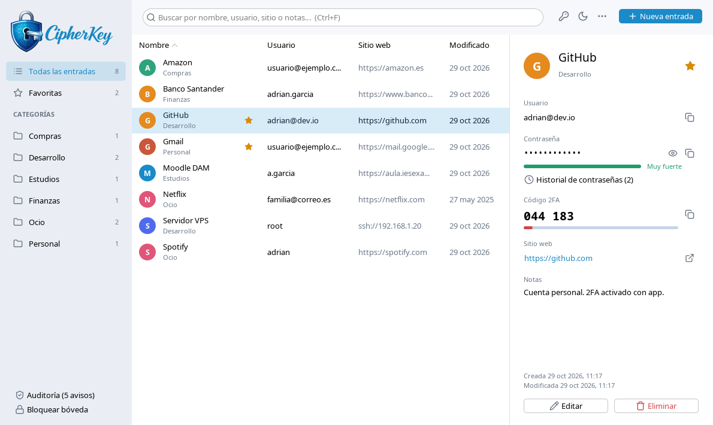
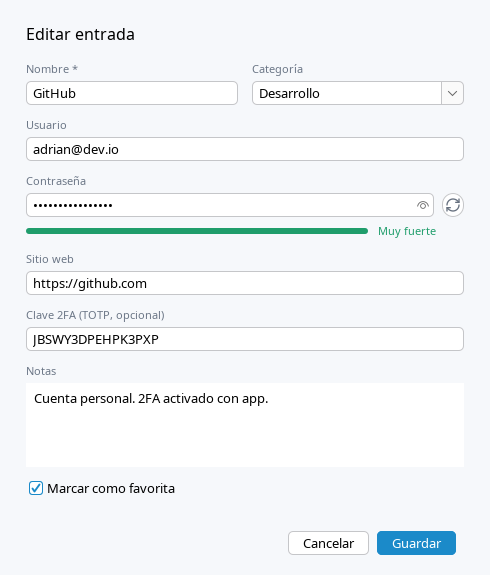
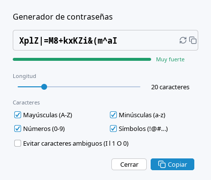
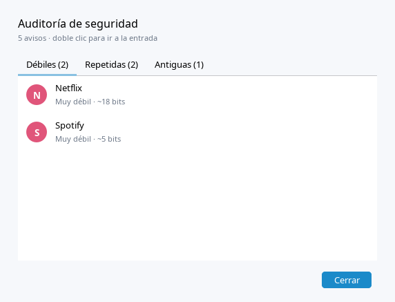
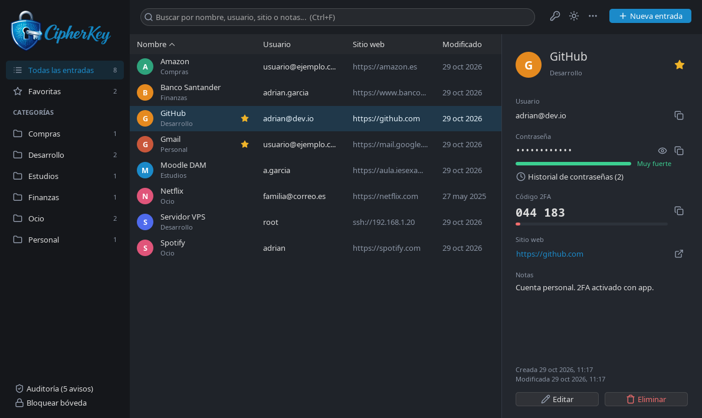
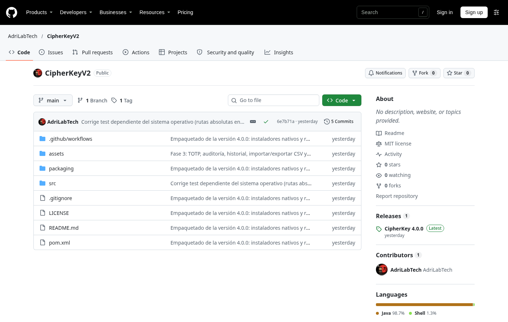
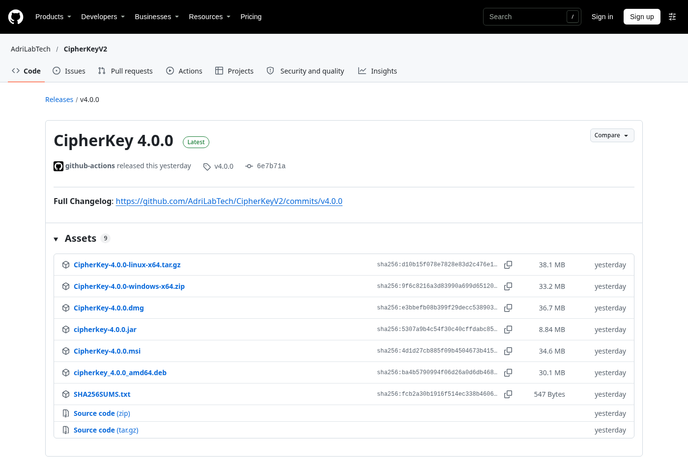

CipherKey es un gestor de contraseñas de escritorio. Guarda todas tus credenciales en un único fichero cifrado (.ckey) que solo se abre con una clave maestra. No tiene servidor, cuenta ni conexión de red: el fichero vive en tu equipo y solo tú decides dónde.
Nombre
CipherKey (versión actual 4.0.0, repositorio CipherKeyV2)
Problema
Tener decenas de cuentas obliga a repetir contraseñas, apuntarlas o confiar en un servicio ajeno.
Solución
Una bóveda local cifrada con Argon2id + AES-256-GCM, con generador, auditoría, 2FA (TOTP) e importación.
Para quién
Quien quiere control total de sus datos y no necesita sincronizar con la nube ni autorrelleno en el navegador.
Disponibilidad
Existe y se puede descargar: release 4.0.0 con instaladores para Linux, Windows y macOS (sección 07).
El problema y la solución de un vistazo.
02 // EL PROBLEMADemasiadas cuentas, demasiada confianza ajena
Cada servicio exige una contraseña. La memoria humana no escala, así que aparecen cuatro atajos, todos con un coste:
Atajo habitual
Riesgo
Repetir la contraseña
Una sola filtración en un servicio débil compromete todas las demás cuentas.
Dejar que el navegador la guarde
Queda atada al navegador y al perfil, sin una clave maestra propia y específica.
Apuntarla en notas o papel
Se pierde, se copia o se lee sin ninguna barrera.
Usar un gestor en la nube
Funciona bien, pero tus datos viven en el servidor de un tercero y dependes de su cuenta, su disponibilidad y su política.
Lo que CipherKey resuelveDar una forma segura y cómoda de usar contraseñas distintas y fuertes en cada sitio, sin ceder los datos a nadie: el cifrado, el fichero y la clave están en tu poder.
03 // RESPONSABILIDADESQué hace CipherKey y qué no
Las seis responsabilidades de la aplicación.
Responsabilidad
Qué hace
Custodiar
Cifra la bóveda con AES-256-GCM, la guarda de forma atómica (fichero temporal + fsync + renombrado) y conserva un .bak de la versión anterior.
Organizar
Entradas con usuario, contraseña, sitio web y notas; categorías, favoritas y búsqueda instantánea por cualquier campo.
Generar
Generador de 8 a 64 caracteres (con opción sin caracteres ambiguos) y medidor de fuerza en vivo.
Proteger
Bloqueo automático por inactividad (5 min por defecto, configurable), portapapeles que se vacía a los 30 s y clave derivada puesta a cero al bloquear.
Auditar
Detecta contraseñas débiles, repetidas, sin cambiar en más de un año o vacías, y guarda el historial de las últimas 10 por entrada.
Interoperar
Códigos 2FA (TOTP) por entrada, importación CSV (Bitwarden, Chrome/Edge/Firefox, KeePass), exportación CSV y copia de seguridad cifrada.
Fuera de su alcance (por diseño): sincronizar entre dispositivos, autorrellenar en el navegador y recuperar una clave maestra olvidada.
04 // LA APLICACIÓNCómo se ve y cómo se usa
Las capturas son de la propia aplicación (datos de ejemplo), en tema claro y oscuro; el tema se recuerda entre sesiones.

Acceso: bóvedas recientes o «Examinar…».

Mismo acceso en tema oscuro.

Ventana principal: barra lateral con categorías, lista ordenable y panel de detalle con código 2FA.

Editar entrada: usuario, contraseña, sitio, categoría, 2FA y notas.

Generador con medidor de fuerza.

Auditoría: contraseñas débiles, repetidas o antiguas.

Panel principal en tema oscuro.
05 // CÓMO FUNCIONAArquitectura y formato de la bóveda
El código (~4.050 líneas en src/main) sigue una arquitectura inspirada en MVC con capas separadas. La lógica de seguridad y de persistencia no depende de la interfaz, por lo que se puede probar sin abrir ninguna ventana.
Capas de la aplicación (paquetes dev.view, controller, model, security y persistence).
El fichero .ckey (formato v2)
Una bóveda es un único fichero. Su cabecera guarda los parámetros de derivación de clave, de modo que se pueden endurecer en el futuro sin romper bóvedas existentes.
Estructura del fichero (anchuras no a escala).
Apertura de una bóveda
Flujo de apertura: si algo no cuadra, el tag de autenticación falla y no se muestra ningún dato.
06 // SEGURIDAD Y POR QUÉ USARLADecisiones de seguridad
Aspecto
Implementación
Derivación de clave
Argon2id (BouncyCastle): 64 MiB, 3 iteraciones, sal aleatoria de 32 bytes. Parámetros validados al abrir para rechazar valores absurdos.
Cifrado
AES-256-GCM con nonce aleatorio de 12 bytes nuevo en cada guardado.
Integridad
La cabecera se autentica como AAD: cualquier alteración invalida la bóveda.
Memoria
La contraseña maestra no se conserva tras abrir; la clave derivada se pone a cero al bloquear.
Red
Ninguna. La aplicación no abre conexiones.
Modelo de confianza: todo ocurre dentro de tu equipo.
Por qué deberías usarla
Control total. Un fichero que tú guardas, copias o cifras donde quieras. Sin cuenta, sin suscripción, sin servidor al que confiar nada.
Seguridad por diseño y no por promesa. Argon2id y AES-GCM, formato documentado y código abierto (MIT) que cualquiera puede revisar.
Cómoda de adoptar. Importa tus contraseñas desde Bitwarden, Chrome/Edge/Firefox o KeePass y puedes exportarlas cuando quieras: no te ata.
Se instala sin fricción. Los paquetes incluyen su propio Java; no necesitas instalar nada más.
Más que guardar. Genera, mide, audita y muestra el código 2FA junto a la contraseña.
CipherKey
Gestor en la nube
Navegador
Dónde están los datos
Tu equipo
Servidor del proveedor (cifrados)
Perfil del navegador
Cuenta necesaria
No
Sí
Normalmente sí
Sincroniza dispositivos
No (lo haces tú copiando el fichero)
Sí
Sí
Autorrelleno
No
Sí
Sí
Código abierto
Sí (MIT)
Depende
Depende
Cuándo no es la mejor opciónSi necesitas sincronización automática entre varios dispositivos o autorrelleno en el navegador, un gestor en la nube cubre mejor ese caso. CipherKey apuesta por lo contrario: máxima autonomía y mínima superficie de ataque.
07 // EXISTE Y SE PUEDE DESCARGARLa aplicación es real y está publicada
CipherKey no es una maqueta: el código está en un repositorio público de GitHub y la versión 4.0.0 se publicó como release con instaladores para tres sistemas operativos. Las dos capturas siguientes se tomaron el 30 de octubre de 2026 sin iniciar sesión (aparece «Sign in»), lo que confirma que son públicas.

Repositorio público github.com/AdriLabTech/CipherKeyV2: código en Java (98,7 %), licencia MIT, 5 commits y una release «Latest».

Release CipherKey 4.0.0 con los 9 recursos descargables y sus hashes SHA-256.
Publicación automática: una etiqueta de versión genera los paquetes de los tres sistemas.
08 // CALIDAD Y ESTADOVerificación, historial y límites
Pruebas: 52 pruebas unitarias (JUnit) sobre el formato y la criptografía de la bóveda (contraseña incorrecta, manipulación de cabecera y datos, cambio de clave, guardado atómico, parámetros KDF absurdos), el generador, TOTP, auditoría y CSV. Reejecutadas el 30-10-2026 sobre una copia limpia del commit 6e7b71a: 52 pruebas, 0 fallos.
Integración continua: GitHub Actions ejecuta mvn verify con JDK 25 en cada push y pull request.
Historial: Beta → 1.0 (clave maestra y generador) → 2.0 (gestión de bóvedas y modo oscuro) → 3.0 (2FA por email, retirado por no proteger el fichero) → 4.0 (formato v2, rediseño, TOTP, auditoría, paquetes nativos).
Limitaciones honestas
Sin recuperación: si olvidas la clave maestra, los datos no se pueden recuperar. Es consecuencia directa de que nadie más tiene la clave.
Ataque offline: quien consiga el .ckey puede intentar adivinar la clave sin límite de intentos; la defensa real es Argon2id y una clave maestra larga. El límite de intentos del acceso es solo de usabilidad.
Instaladores sin firmar: Windows mostrará SmartScreen y macOS pedirá abrirla con clic derecho la primera vez.
Sin auditoría externa:no consta una revisión de seguridad independiente del código; el cifrado se apoya en primitivas estándar (JCA y BouncyCastle) pero la aplicación como conjunto no ha sido auditada por terceros.
Los instaladores nativos no se han probado aquí: este informe se basa en el código, las pruebas y las capturas del repositorio, no en una instalación en cada sistema.
Hoja de ruta
Protección adicional de la bóveda (archivo de clave o FIDO2/WebAuthn) en lugar del antiguo 2FA por email · escaneo del QR del 2FA desde una imagen · bloqueo al suspender el equipo y limpieza del portapapeles al bloquear.
Fuentes: README, código fuente, informes de pruebas y página de la release del repositorio github.com/AdriLabTech/CipherKeyV2 (versión 4.0.0, commit 6e7b71a).